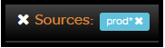
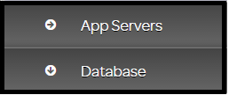
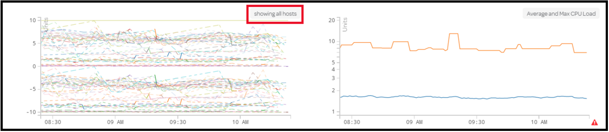
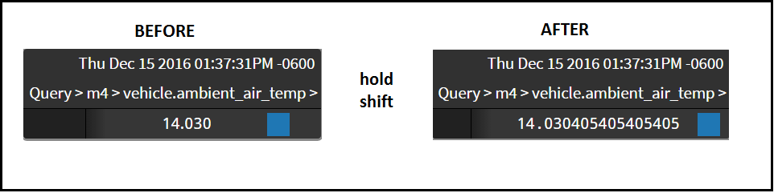
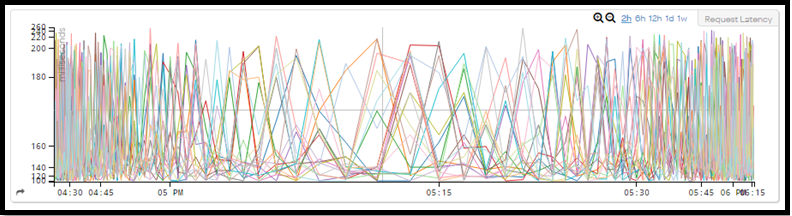

Common Interactions
There are a few interactions that are common to dashboards and charts. You can share shortened URLs and isolate sources.
Sharing Dashboards and Charts
When you make a change to a dashboard or chart the URL updates to reflect that change. The URL encodes information about the dashboard or chart name and any settings you have applied. With this functionality, you can quickly and easily share your current view with other users. In contrast most monitoring solutions allow you to only share a static image of a chart. When you share a URL from Wavefront with other users, they can see the exact view you see and can also interact with the dashboard or chart. However, the URL link from the address bar can be a very long string. The URL shortener link creates a condensed URL for the purpose of sharing. When you click the link icon, it automatically copies a shortened URL to your clipboard.

You can also manually copy the shortened URL link.
Isolating Sources
The Highlight Sources fly-out allows you to isolate one or more source data streams for every chart on a dashboard or an individual chart. When you hover over the magnifying lens icon,
the fly-out appears so you can type in the name of the sources you’d like to isolate.

You can use wildcards in this fly-out. For example, you can search for app-1, app-1*, or *-1*. When you isolate a source across all charts on a dashboard, the desired source displays as colored on each chart while all other sources lose color saturation. When a source is isolated, an isolation bar appears at the bottom of the page.

You can remove a single isolation by clicking next to the source name, or remove all isolations by clicking next to the Sources: header.
Dashboard Interactions
The following portion of this article will showcase all of the ways you can interact with an entire dashboard in Wavefront. Features like sections and favorites are tied to the dashboard, while features like global queries, event overlays, and time windows will affect every chart that’s saved to the dashboard.
Time Windows

When you log in to Wavefront, the first dashboard you visit displays two-hour time window charts with real-time data flowing in. If you need to see a larger or smaller time window or need to view past data instead of real-time data, use the Time bar to display different time windows. You can configure the default time window in dashboard preferences.
The following 25 second video shows how adjusting time windows via the Time bar affects charts.
The first components you see on the Time bar are the Live Data and Custom Date options. You should choose Live Data when you want to see up-to-date data on the charts. If you want to look at past data, then choose Custom Date. When you select Custom Date, fields for a start and end time display. You can set your time parameters in these fields.
A set of time window options (10m, 2h, 6h, 12h, 1d, 1w) display to the right of the Live Data/Custom Date options. When Live Data is selected, the time window options will quickly increase or decrease the amount of live data displayed within each chart. Choosing a time window while Custom Date is selected adjusts the start time based on the end time. For example, if your end time is 3:00 PM and you choose 12h, then the start time is adjusted to 3:00 AM.
Event Overlays
The Events overlay option allows you to display events on the x-axis of charts. See Displaying Events in Charts.
Dashboard Variables
Dashboard variables are used within ts() expressions, and can represent any string of text such as a source name, ts() call, or set of advanced functions. If the existing dashboard you’re viewing has dashboard variables attached to it, then you will typically see a Variables section below the Time bar.
Sections
The Sections bar is located directly below the Time bar and allows you to jump to any section on a dashboard. By default, every dashboard has at least one section. Dashboard sections allow you to group saved charts in a meaningful way. As with the Time bar, the Sections bar always appears at the top of the dashboard screen. Rather than scrolling, you can jump to a desired section by clicking the section name on the Sections bar.
You also have the option of collapsing sections on a dashboard. To do so, locate the section you’d like to collapse on the dashboard and click the section header. Collapsed sections have a and expanded sections have a . You can expand a collapsed section by clicking the section header again.

Global Queries
Imagine a dashboard where you want to apply a temporary ts() expression to every chart. For example, let’s say your company has a dashboard that tracks errors per second across several applications. Seeing a temporary value of 5 drawn across every chart to see which applications currently have the highest number of errors could be beneficial. Instead of permanently applying a constant value of 5 to every chart, you can use the Global Query fly-out to accomplish this. Global queries allow you to temporarily apply any ts() expression to every chart on a dashboard. For example:
- A constant value such as 5…
- A simple ts() expression such as ts(~metrics.counter)…
- An advanced ts() expression such as (ts(mem.total) - ts(mem.free)) * 100
The Global Query fly-out is represented by a icon and can be found in the bottom corner of any dashboard. You can access the Global Query fly-out by hovering over the icon. When you do this, a field appears where you can apply any ts() expression.
Suppose you want to apply a constant value of 5 as a time series on each of the three charts. You can do that by applying a constant value of 5 to the global query fly-out:

Once you type in the global query you’d like to apply to every chart, press enter. Every chart now shows a temporary time series of 5:

The Global Query fly-out stays out until you remove the temporary query from the field.
Opening a Chart
To open a chart, click the chart name in the upper right corner.

The chart editor displays, where you can modify the chart queries and display properties.
Chart Interactions
This section describes all the ways you can interact directly with charts. These interactions can be made for a single chart on a dashboard or an individual chart page. Each of the following features can be accessed by hovering over the chart.
Time Windows
You can adjust time windows for individual charts in a few different ways.
Time Bar
The first option for adjusting time windows for a single chart is through the chart Time bar. The chart Time bar displays in the upper-right corner of a chart when you hover over the chart.

The magnifying lenses allow you to quickly increase or decrease the time window. You can also adjust the amount of time in your window by clicking 2h, 6h, 12h, 1d, or 1w.
Drag and Zoom
The second option for adjusting time windows for a single chart is referred to as the ‘Drag and Zoom’ method. At times, you may notice points in time on a chart that you would like to examine in more detail. Rather than determining the smaller time window you’d like to view and entering it into the Time bar, you can use the ‘Drag and Zoom’ option. To use this feature, hover over a chart and place your cursor at the beginning of the desired time window. In the chart below, this would be approximately 10:26 AM. Once you are at the desired start point, left click and hold down while dragging over the desired time window. A blue box appears over the desired time window. Once you have reached the desired end point, around 10:33 AM in the chart below, release the mouse button. The highlighted time window expands to fit your chart. If you’d like to apply this method to all charts on a dashboard, hold Shift while performing the ‘Drag and Zoom’ method.

Drag X-Axis
The final option for adjusting time windows for a single chart is by dragging the x-axis back and forth. Place your cursor over the x-axis until your cursor changes to a 4-way arrow . When this happens, click and hold down on the x-axis and drag your cursor left and right. By doing this, you can shift the chart time window into the past or future. Once you reach the present time you will no longer be able to drag the S-axis into the future. Just like the ‘Drag and Zoom’ method, you can hold down Shift to apply the ‘X-axis drag’ method to all charts on a dashboard.
Propagating Time Windows
Any time you adjust the time window of a single chart, you have the option of adjusting every other chart on the dashboard to match that individual chart time window, or reset the individual chart to match all of the other charts time windows. To propagate the individual chart time window to all other charts on the dashboard, click the share icon that appears directly under the chart name in the top right corner of the chart box. To reset the individual chart window to match all other charts, click RESET.

Isolating a Time Series
When looking at a chart on a dashboard, you may notice an anomaly for a single stream that you want to investigate further. Wavefront allows you to isolate that stream for all charts on a dashboard. To do this, hover over the stream you want to isolate. When you do this, you should see the other streams lose color saturation while the stream you hover over stays saturated. If you hover over multiple streams then each of them will stay saturated. Once you have only the single stream highlighted, click it. When you do this, each chart on the dashboard updates to display that single stream on every chart. If you wish to isolate multiple streams on all charts, hold down the Ctrl key and repeat the process.
When a data stream is isolated, an isolation bar appears at the bottom of the page. If the stream is related to a single source, then it appears in the Sources: list on the bar. If the data stream represents an aggregation of sources, then it appears in the Series: list on the bar.

You can remove a single isolation by clicking the next to the isolated stream. You can remove all isolated streams by clicking the next to the list title on the isolation bar.
Just like isolating sources from the source fly-out on a dashboard, you can isolate aggregated data streams by query field names. Query fields can be an aggregation of sources, such as sum(ts(“requests.latency”)). When you isolate a query field instead of a source, the query field name for the individual chart displays on the isolation bar.
Chart Display Options
Charts support a few options for controlling how data displays. You can display data in full precision mode, hide the hover legend, and display a fish-eye view. These features are enabled using hot keys: Shift, Ctrl, and Alt (option on Mac).
Full-Precision Mode
To display data in full-precision mode in the hover legend, hold down the Shift key and hover over any chart:

Hide Hover Legend
To hide the hover legend when hovering over a chart, hold down the Ctrl key. For charts that include a hover legend by default, you can permanently disable the hover legend under the Legend tab in the individual chart view.
Fish-Eye View
When data streams are populated very densely, it can be hard to tell the exact value of each stream. The fish-eye view expands the chart in the neighborhood of the cursor. To enable fish-eye view, hold down the Alt (option on Mac) key while you hover over a chart.

When using this feature, the vertical and horizontal lines are preserved.